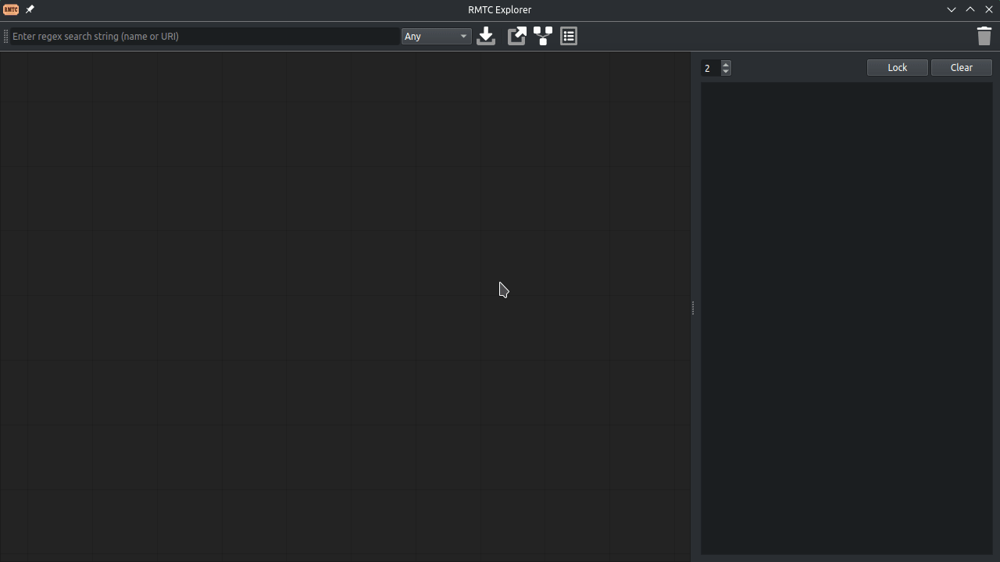
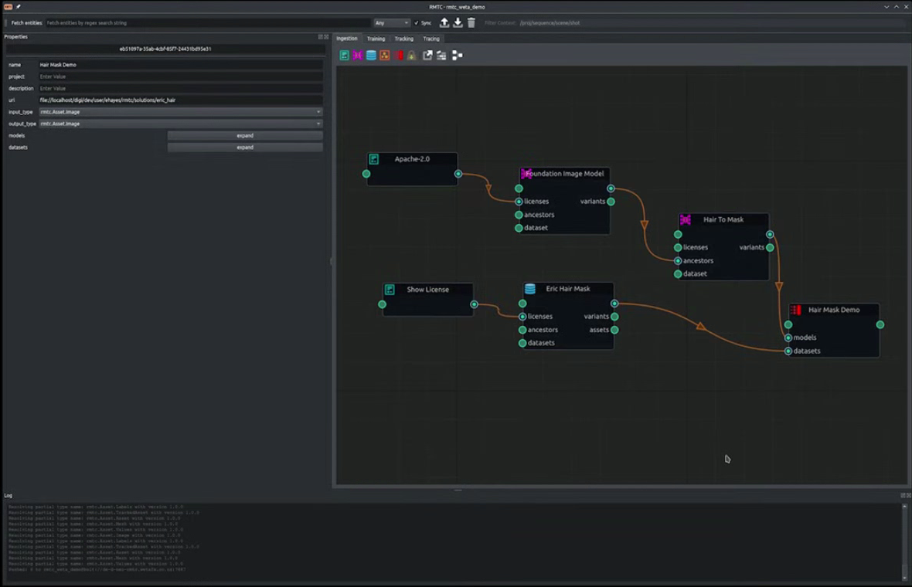
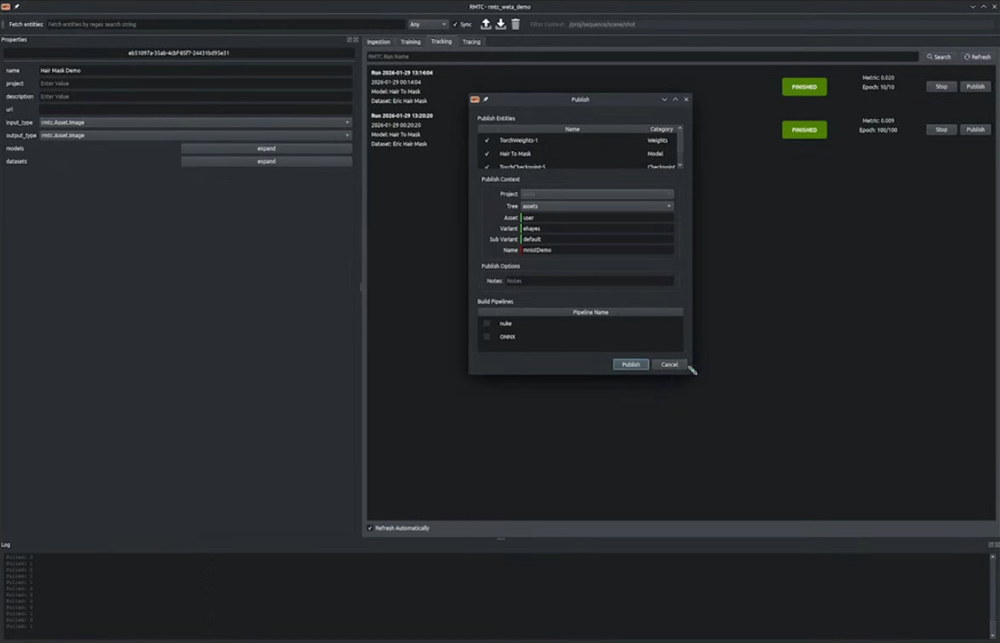
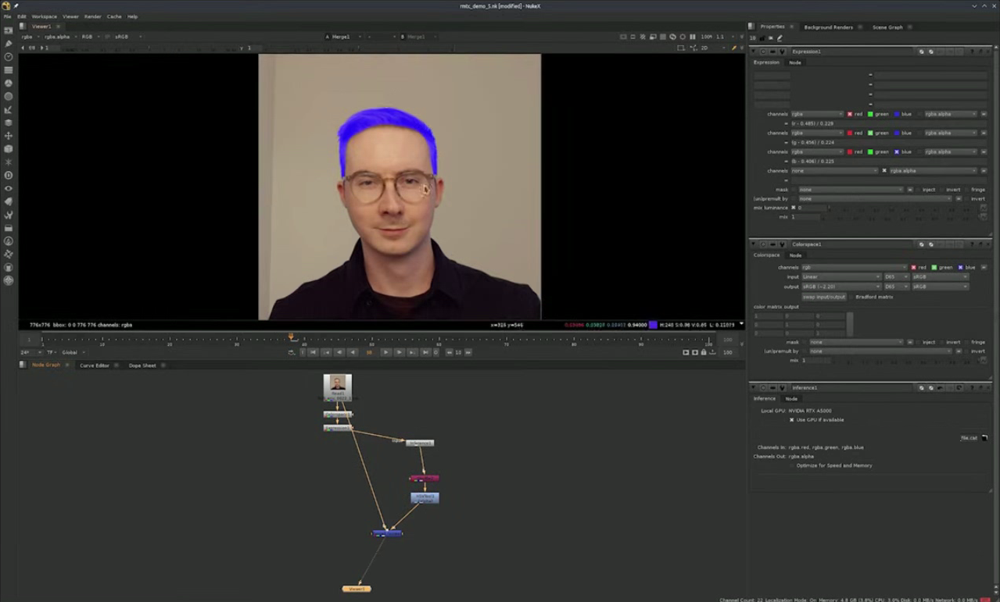

RMTC integrates with VFX pipelines to track AI artifacts through training and inference. Recording the model, dataset, weights and license information in a chain of derivations to support your own provenance processes.

A set of abstractions and a reference implementation, designed so facilities can adopt a traceable training & inferencing platform or just the tracking layer, to wrap existing pipelines.
Trace inferences back up through to the weights, run, model, dataset and licenses — a graph-backed provenance record for artifacts you touch.
Artifacts carry license properties & rights — so use can be checked against recorded metadata rather than assumed. This metadata is indicative, not a substitute for legal review.
A reference PyTorch implementation with a scheduler abstraction built for local runs today, and render-farm/cloud backends as a first-class extension point.
Ingest foundational models, refine them for show needs, publish to a standard format, pass standard VFX asset types between models and invoke them directly from DCCs like Nuke.
A YAML-driven Factory and versioned type-name system means facilities can swap in Keras, OpenCue, or their own subsystems without forking the core.
Junction for ingestion, a property browser for inspection, and a provenance explorer for tracing lineage visually, all in one Qt toolset.
Bourne from the production needs of the award winning VFX Studio; Wētā FX, with support from the ASWF. RMTC is a peer project of OpenEXR, the USD-WG, ACES and MaterialX and is a founding project of the ASWF Machine Learning Working Group alongside DNA.
A look at the GUI layer built on top of RMTC's tracking and pipeline core.



Pick the tracking layer alone, or adopt the full pipeline — RMTC is designed for pick-'n-mix adoption.